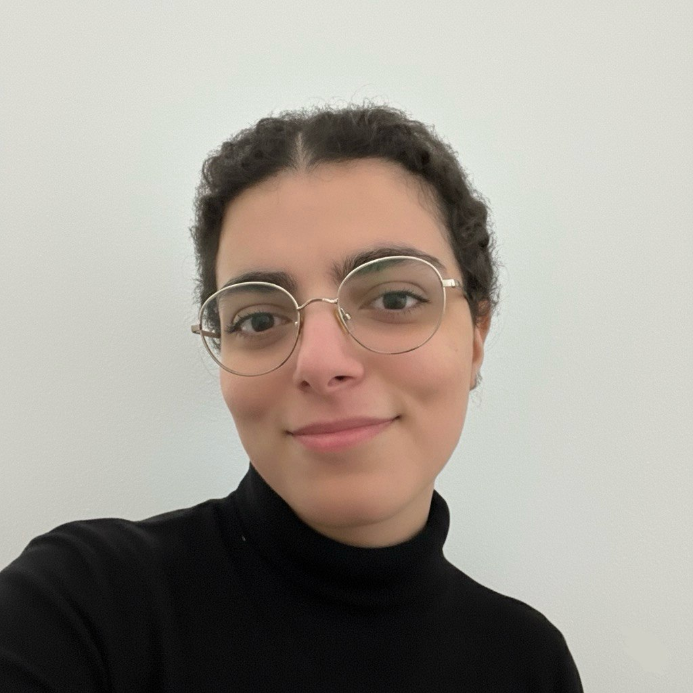
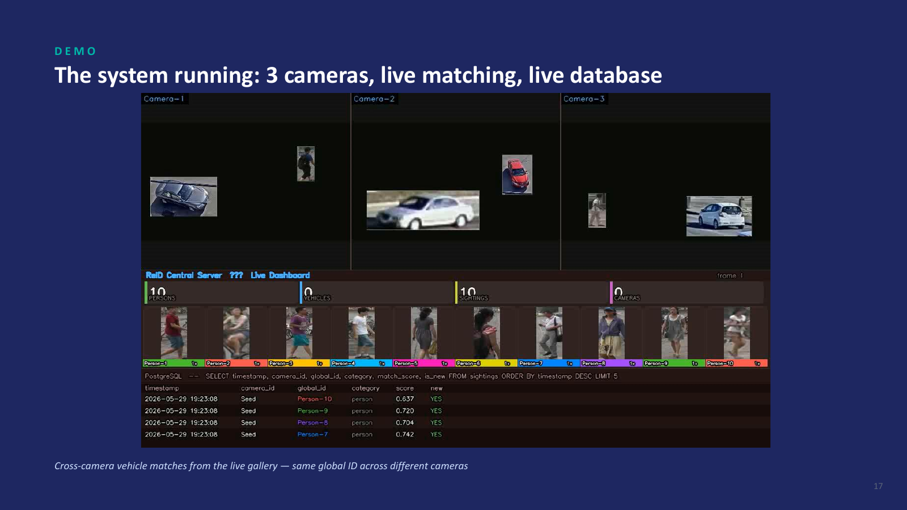
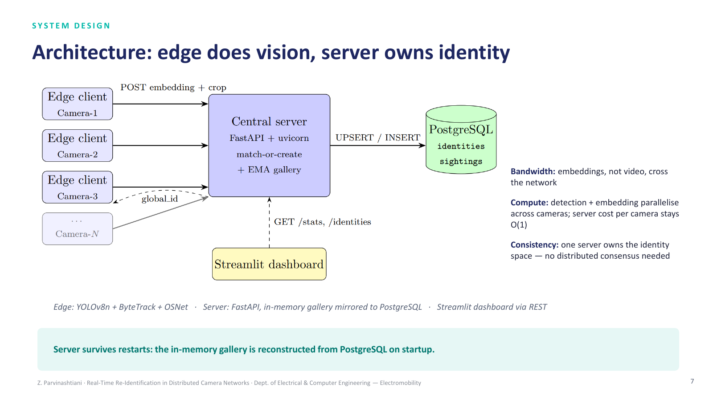

Embedded ping-pong game
Bare-metal drivers, sensor input and closed-loop paddle control in a two-node electromechanical ping-pong system.
Explore the project ↗I’m a computer vision, AI and embedded engineer. I completed my M.Sc. at NTNU and RPTU in 2026, with a thesis graded 1.0 on real-time multi-camera re-identification.
Based in Kaiserslautern, I’m looking for roles in Norway and Germany.

Visual recognition, camera networks and interfaces between people and robots.
02 ↗Firmware, real-time control and the boundary between hardware and software.
03 ↗Understanding video, working carefully with data, and connecting models to systems.
For my master’s thesis, I built a system to recognise people and vehicles across cameras. I worked on the recognition pipeline, server and database.
The work included storing identity history and restoring it after a server restart.
Read the case study ↗
Bare-metal drivers, sensor input and closed-loop paddle control in a two-node electromechanical ping-pong system.
Explore the project ↗An independent analysis of Norwegian production data, including missing values, reporting changes and forecasting.
Explore the project ↗

I’m curious and like getting involved in the practical work. I enjoy sharing ideas with other people and working towards something useful.
I studied in Norway and Germany. I enjoyed Norway’s nature and lifestyle, and Germany’s technology scene. I also loved the forests around Kaiserslautern.
More about me ↗You can email me about a job, a PhD opportunity, or a project you’d like to discuss.